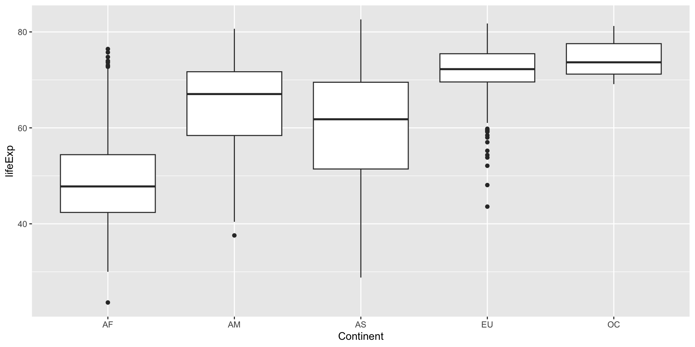
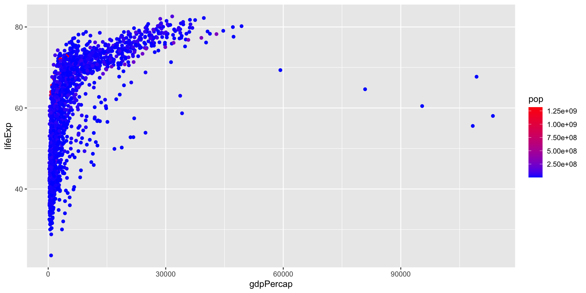
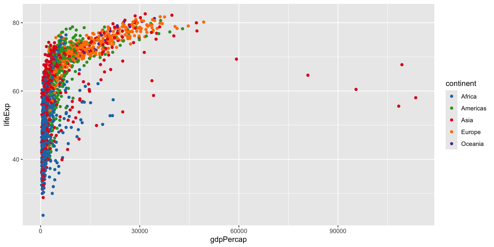
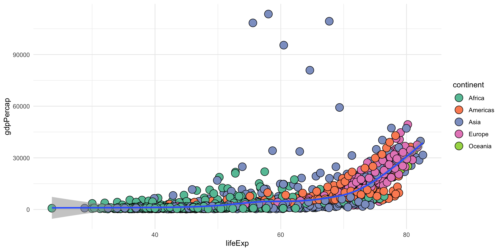
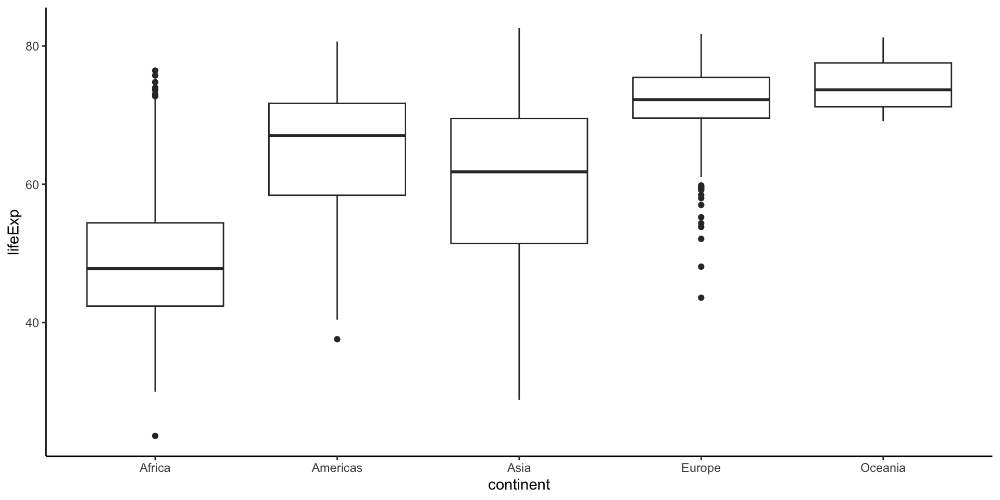
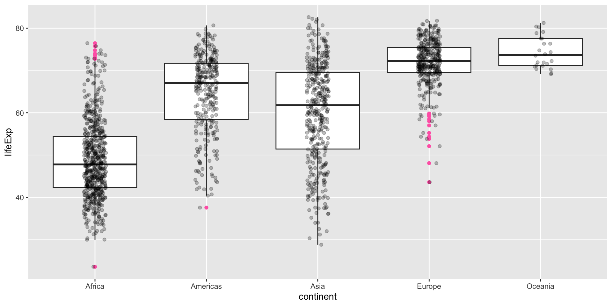
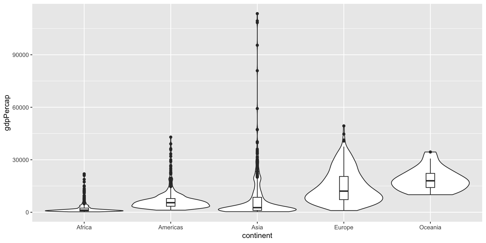
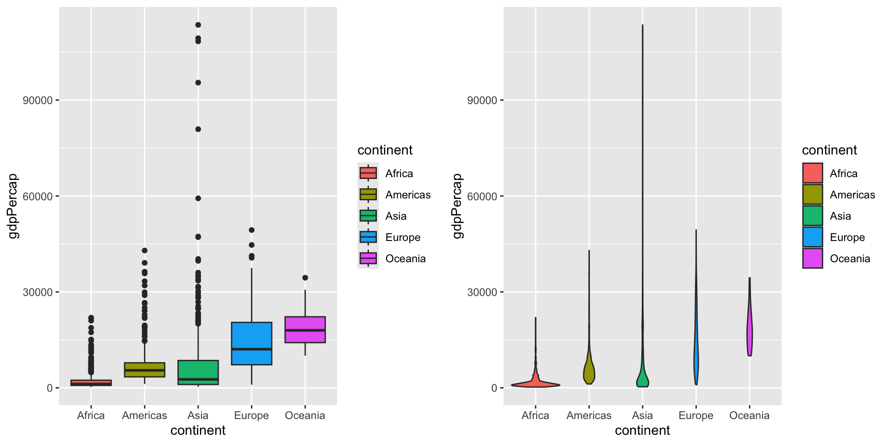

This R Markdown document demonstrates data manipulation and visualization using the tidyverse suite of packages, particularly dplyr, tidyr, readr, stringr, and ggplot2. We will use the gapminder dataset to perform various data operations and create visualizations. The document also includes solutions to the provided exercises.
Installing and Loading Packages
First, we load the necessary packages using renv.
library(renv)renv::restore(prompt =FALSE)
Exploring the Gapminder Dataset
Let’s take a look at the first few rows of the gapminder dataset.
# View first six rowshead(gapminder)
# A tibble: 6 × 6
country continent year lifeExp pop gdpPercap
<fct> <fct> <int> <dbl> <int> <dbl>
1 Afghanistan Asia 1952 28.8 8425333 779.
2 Afghanistan Asia 1957 30.3 9240934 821.
3 Afghanistan Asia 1962 32.0 10267083 853.
4 Afghanistan Asia 1967 34.0 11537966 836.
5 Afghanistan Asia 1972 36.1 13079460 740.
6 Afghanistan Asia 1977 38.4 14880372 786.
Data Manipulation with dplyr
The dplyr package provides functions for data manipulation, such as select(), filter(), mutate(), arrange(), summarise(), and group_by().
# A tibble: 6 × 3
country continent pop
<fct> <fct> <int>
1 Afghanistan Asia 8425333
2 Afghanistan Asia 9240934
3 Afghanistan Asia 10267083
4 Afghanistan Asia 11537966
5 Afghanistan Asia 13079460
6 Afghanistan Asia 14880372
range of columns
# Select range of columnssel_data <- gapminder %>%select(country, year:pop)head(sel_data)
# Rename columns with rename()sel_data <- gapminder %>%rename(Life_Expectancy = lifeExp)head(sel_data)
# A tibble: 6 × 6
country continent year Life_Expectancy pop gdpPercap
<fct> <fct> <int> <dbl> <int> <dbl>
1 Afghanistan Asia 1952 28.8 8425333 779.
2 Afghanistan Asia 1957 30.3 9240934 821.
3 Afghanistan Asia 1962 32.0 10267083 853.
4 Afghanistan Asia 1967 34.0 11537966 836.
5 Afghanistan Asia 1972 36.1 13079460 740.
6 Afghanistan Asia 1977 38.4 14880372 786.
Additional Selection Methods
Select columns using indices, ranges, or specific patterns.
Select by index
# Select by indexgapminder %>%select(c(2, 3)) %>%head()
# A tibble: 6 × 2
continent year
<fct> <int>
1 Asia 1952
2 Asia 1957
3 Asia 1962
4 Asia 1967
5 Asia 1972
6 Asia 1977
Select by index range
# Select by index rangegapminder %>%select(2:3) %>%head()
# A tibble: 6 × 2
continent year
<fct> <int>
1 Asia 1952
2 Asia 1957
3 Asia 1962
4 Asia 1967
5 Asia 1972
6 Asia 1977
Exclude by labels
# Select by labelsgapminder %>%select(c('country', 'continent')) %>%head()
# A tibble: 6 × 2
country continent
<fct> <fct>
1 Afghanistan Asia
2 Afghanistan Asia
3 Afghanistan Asia
4 Afghanistan Asia
5 Afghanistan Asia
6 Afghanistan Asia
Exclude by labels
# Exclude by labelsgapminder %>%select(-c('country', 'continent')) %>%head()
# Select columns starting with 'co'gapminder %>%select(starts_with('co')) %>%head()
# A tibble: 6 × 2
country continent
<fct> <fct>
1 Afghanistan Asia
2 Afghanistan Asia
3 Afghanistan Asia
4 Afghanistan Asia
5 Afghanistan Asia
6 Afghanistan Asia
Select columns ending with ‘p’
# Select columns ending with 'p'gapminder %>%select(ends_with('p')) %>%head()
# A tibble: 6 × 1
pop
<int>
1 8425333
2 9240934
3 10267083
4 11537966
5 13079460
6 14880372
Filtering Rows
Use filter() to subset rows based on conditions.
Filter for Belgium
# Filter for Belgiumfilt_data <- gapminder %>%filter(country =="Belgium") %>%head(8)filt_data
# A tibble: 8 × 6
country continent year lifeExp pop gdpPercap
<fct> <fct> <int> <dbl> <int> <dbl>
1 Belgium Europe 1952 68 8730405 8343.
2 Belgium Europe 1957 69.2 8989111 9715.
3 Belgium Europe 1962 70.2 9218400 10991.
4 Belgium Europe 1967 70.9 9556500 13149.
5 Belgium Europe 1972 71.4 9709100 16672.
6 Belgium Europe 1977 72.8 9821800 19118.
7 Belgium Europe 1982 73.9 9856303 20980.
8 Belgium Europe 1987 75.4 9870200 22526.
Filter with multiple conditions
# Filter with multiple conditionsgapminder %>%filter(country =="Oman"& year >1980& year <=2000) %>%head(8)
# A tibble: 4 × 6
country continent year lifeExp pop gdpPercap
<fct> <fct> <int> <dbl> <int> <dbl>
1 Oman Asia 1982 62.7 1301048 12955.
2 Oman Asia 1987 67.7 1593882 18115.
3 Oman Asia 1992 71.2 1915208 18617.
4 Oman Asia 1997 72.5 2283635 19702.
# A tibble: 6 × 3
country year gdpPercap
<fct> <int> <dbl>
1 United Kingdom 1952 9980.
2 United Kingdom 1957 11283.
3 United Kingdom 1962 12477.
4 United Kingdom 1967 14143.
5 United Kingdom 1972 15895.
6 United Kingdom 1977 17429.
Mutating Data
Use mutate() to create new columns and transmute() to keep only new columns.
Using Mutate to add new columns
# Add new columnsgapminder %>%mutate(pop_million = pop /1000000,countName =substring(country, 1, 3)) %>%head()
# A tibble: 6 × 8
country continent year lifeExp pop gdpPercap pop_million countName
<fct> <fct> <int> <dbl> <int> <dbl> <dbl> <chr>
1 Afghanistan Asia 1952 28.8 8425333 779. 8.43 Afg
2 Afghanistan Asia 1957 30.3 9240934 821. 9.24 Afg
3 Afghanistan Asia 1962 32.0 10267083 853. 10.3 Afg
4 Afghanistan Asia 1967 34.0 11537966 836. 11.5 Afg
5 Afghanistan Asia 1972 36.1 13079460 740. 13.1 Afg
6 Afghanistan Asia 1977 38.4 14880372 786. 14.9 Afg
Using Mutate to Keep only new columns
# Keep only new columnsgapminder %>%transmute(total_years = lifeExp * pop) %>%head()
# Box plot with customized x-axisggplot(gapminder, aes(x = continent, y = lifeExp)) +geom_boxplot() +scale_x_discrete(name ="Continent",labels =c("Africa"="AF", "Americas"="AM","Asia"="AS", "Europe"="EU", "Oceania"="OC"))

Color gradient scale
# Color gradient scaleggplot(data = gapminder, aes(x = gdpPercap, y = lifeExp, color = pop)) +geom_point() +scale_color_gradient(low ="blue", high ="red")

Discrete color scale
# Discrete color scaleggplot(data = gapminder, aes(x = gdpPercap, y = lifeExp, color = continent)) +geom_point() +scale_color_manual(values =c("#1f78b4", "#33a02c", "#e31a1c", "#ff7f00", "#6a3d9a"))

Plot with color palette
# Plot with color paletteggplot(data = gapminder, aes(x = lifeExp, y = gdpPercap)) +geom_point(aes(fill = continent), size =5, shape =21) +geom_smooth(alpha =0.5) +scale_fill_brewer(palette ="Set2") +theme_minimal()

Box plot with theme_classic
# Box plot with theme_classicggplot(gapminder, aes(x = continent, y = lifeExp)) +geom_boxplot() +theme_classic()

Box plot with jitter
# Box plot with jitterggplot(gapminder, aes(x = continent, y = lifeExp)) +geom_boxplot(outlier.colour ="hotpink") +geom_jitter(position =position_jitter(width =0.1, height =0), alpha =1/4)

Combined violin and box plot
# Combined violin and box plotggplot(gapminder) +geom_violin(aes(x = continent, y = gdpPercap), scale ="width") +geom_boxplot(aes(x = continent, y = gdpPercap), width =0.1)

Multiple plots with gridExtra
# Multiple plots with gridExtrap1 <-ggplot(gapminder) +geom_boxplot(aes(x = continent, y = gdpPercap, fill = continent))p2 <-ggplot(gapminder) +geom_violin(aes(x = continent, y = gdpPercap, fill = continent))grid.arrange(p1, p2, nrow =1)

Marginal histogram
# Marginal histogramp <-ggplot(data = gapminder, aes(x = lifeExp, y = gdpPercap, fill = continent)) +geom_point() +theme(legend.position ="none")ggMarginal(p, type ="histogram")
# A tibble: 6 × 3
continent pop gdpPercap
<fct> <int> <dbl>
1 Asia 8425333 779.
2 Asia 9240934 821.
3 Asia 10267083 853.
4 Asia 11537966 836.
5 Asia 13079460 740.
6 Asia 14880372 786.
Exercise 3: Filter for year 2002
gapminder %>%filter(year ==2002) %>%head()
# A tibble: 6 × 6
country continent year lifeExp pop gdpPercap
<fct> <fct> <int> <dbl> <int> <dbl>
1 Afghanistan Asia 2002 42.1 25268405 727.
2 Albania Europe 2002 75.7 3508512 4604.
3 Algeria Africa 2002 71.0 31287142 5288.
4 Angola Africa 2002 41.0 10866106 2773.
5 Argentina Americas 2002 74.3 38331121 8798.
6 Australia Oceania 2002 80.4 19546792 30688.
Exercise 4: Store and display data for Asian countries
# Get working directorywd <-getwd()# Split by appropriate delimiterpath_parts <-str_split(wd, "/")[[1]]# Fetch last elementlast_element <- path_parts[length(path_parts)]print(last_element)
[1] "episodes"
Conclusion
This document covers key tidyverse functionalities and ggplot2 visualizations using the gapminder dataset. It includes data manipulation, file handling, string manipulation, and various plotting techniques, along with solutions to the exercises.
To download this R Markdown file, save it with a .Rmd extension and open it in RStudio or another R Markdown-compatible environment.